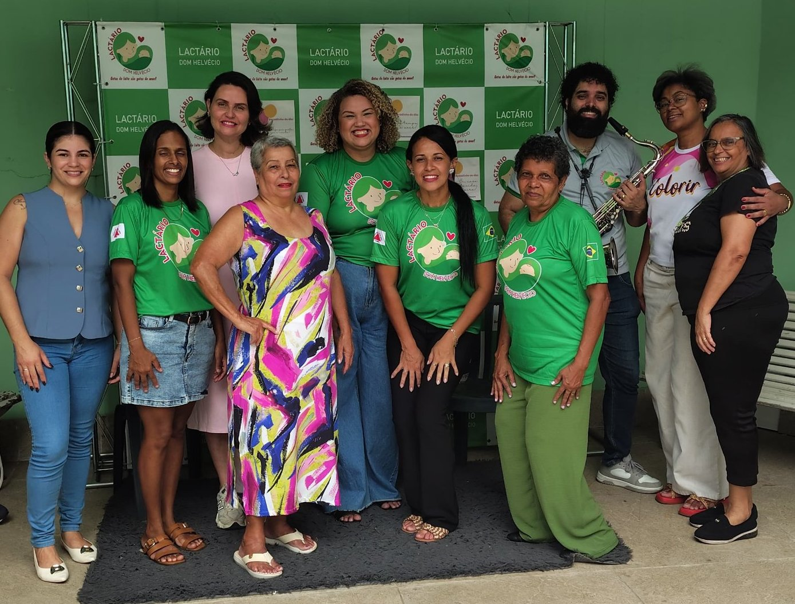
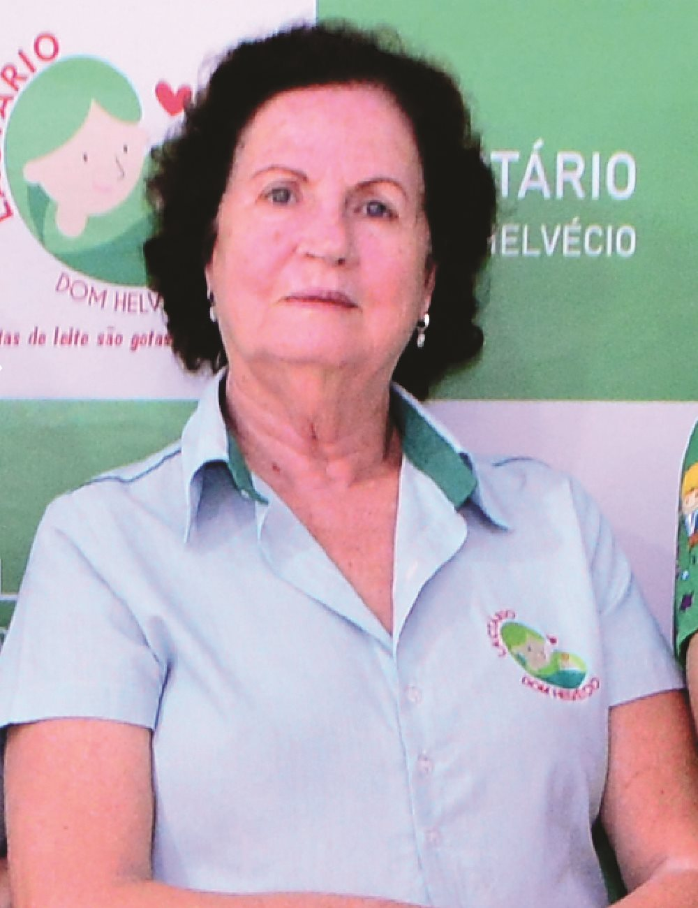
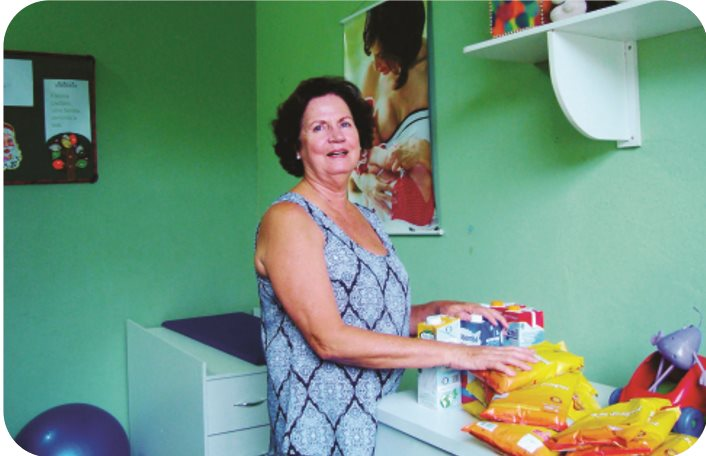
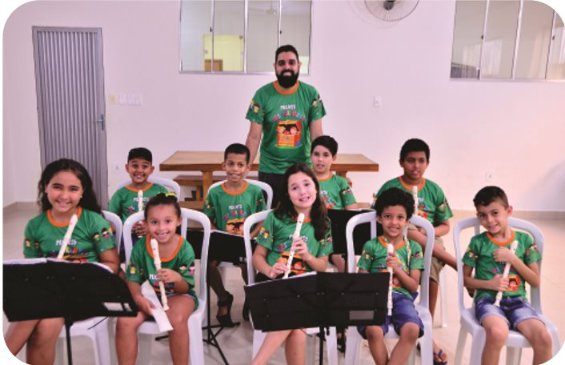
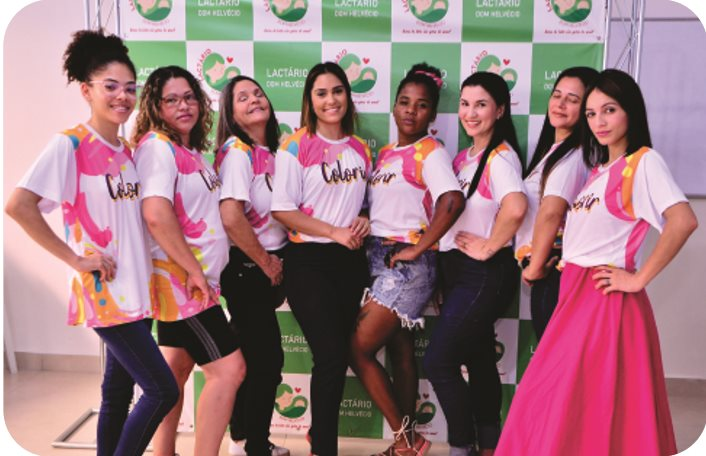
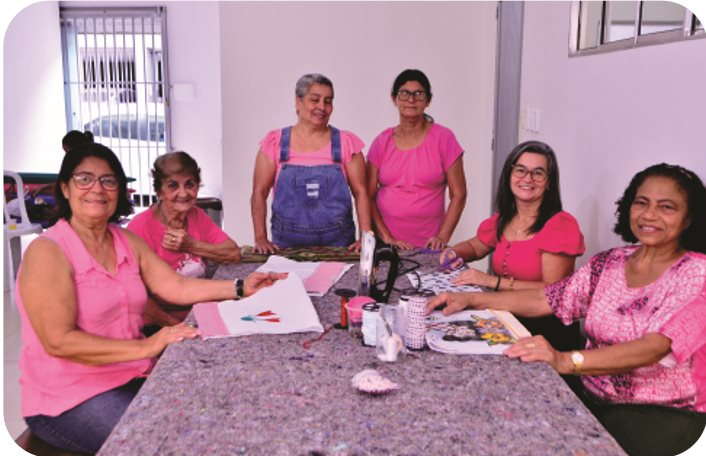

Missão
Promover o desenvolvimento saudável das pessoas, ofertando acolhimento e cuidado com a primeira infância, criança, adolescente e família, visando à qualidade de vida e à transformação social.
Desde 1964 em Coronel Fabriciano - MG
Há mais de 60 anos, o Lactário Dom Helvécio apoia mulheres e seus filhos com alimentação, cuidado, cultura e convivência.

Quem somos
A Associação de Proteção à Maternidade e Infância de Coronel Fabriciano, popularmente conhecida como Lactário Dom Helvécio, surgiu em 1964, movida pelo desejo de mulheres da sociedade de ajudar famílias em situação de vulnerabilidade social.
Naquela época, a cidade era ainda muito jovem e a assistência social dependia da benevolência da sociedade e da igreja. O Lactário nasceu para preencher essa lacuna e, aos poucos, virou um Clube de Mães: um lugar de socorro a mães pobres, onde se servia o famoso mingau que matava a fome das crianças, onde se levava leite para os bebês e onde as mães recebiam orientações sobre o cuidado com os filhos.
O terreno onde a entidade funciona até hoje foi cedido pela Congregação Redentorista, por meio do então padre Dom Lelis Lara. O nome Dom Helvécio homenageia o bispo da cidade, muito influente no trabalho social dessas mulheres.
Promover o desenvolvimento saudável das pessoas, ofertando acolhimento e cuidado com a primeira infância, criança, adolescente e família, visando à qualidade de vida e à transformação social.
Ser reconhecido e tornar-se referência na garantia dos direitos da primeira infância, da criança e do adolescente e no acolhimento das famílias.
Ética, fraternidade, respeito, competência, transparência, integridade e solidariedade.

Palavra da presidente
Nesses 60 anos de história, o Lactário contribuiu para que crianças em seus primeiros meses de vida tivessem a garantia de sua alimentação básica. [...] Lactário mudou a minha vida! Me dá a oportunidade de, diariamente, plantar sementes de esperança na vida das famílias e na minha própria.
Acreditamos que qualquer estímulo positivo na vida de uma criança e de um adolescente é como uma semente que, ao seu tempo, dará fruto.
Elza Azevedo Albeny
Presidente da instituição
Nossos projetos
Dos bebês aos idosos, cada projeto fortalece vínculos, renda, autoestima e acesso a direitos.

Busca garantir a segurança alimentar de bebês de 0 a 18 meses, estendendo-se em alguns casos até os 24 meses, por meio da doação de leite. O projeto atende toda a população infantil de Coronel Fabriciano, em todas as regiões da cidade, e usa as doações da sociedade civil para complementar a nutrição dos bebês.
Recebemos todos os tipos de leite, mas nossa maior prioridade é o leite em pó de qualquer marca.

Crianças e adolescentes de 7 a 17 anos
Aulas de violão e flauta doce para até 30 participantes, em todos os territórios de Coronel Fabriciano. Desperta a autoestima, apresenta a música como expressão cultural e oferece uma alternativa saudável e criativa ao tempo livre. Financiado pelo Fundo Municipal dos Direitos da Criança e do Adolescente (FIA).

Mulheres de 18 a 59 anos
Atividades de embelezamento que vão além da estética: estimulam o empreendedorismo, preparam as mulheres para o mercado de trabalho e fortalecem vínculos familiares e comunitários, num espaço acolhedor e de escuta segura. Atende até 10 participantes.

Mulheres · geração de renda
Iniciativa da facilitadora Fran Orlanda, em parceria com o Lactário. Oficinas de corte, costura e artesanato para 20 mulheres, com aprendizado, empoderamento, geração de renda e apoio mútuo entre as participantes.
Painel de parceiros
Estas empresas doam leite e apoiam o trabalho do Lactário Dom Helvécio. A elas, nosso muito obrigado.
Para trocar um quadro pelo logo real: coloque a imagem na pasta logos e substitua o texto "Sua marca aqui" por <img src="logos/empresa.png" alt="Nome da empresa">. O link de cada quadro pode apontar para o site da empresa.
Como ajudar
Recebemos todos os tipos de leite. A prioridade é o leite em pó de qualquer marca.
O Lactário não recebe leite materno.
Entregue na nossa sede, no horário de funcionamento.
Chave Pix (CNPJ):
19.880.541/0001-80
Banco do Brasil · Agência 0365-4 · Conta corrente 5450-0
Associação de Proteção à Maternidade e Infância de Coronel Fabriciano
O bazar mantém a maioria das atividades da entidade e é aberto ao público durante o expediente. Você pode comprar e ajudar também!
Empresas doadoras ganham destaque no nosso painel de parceiros.
Quero ser parceiroContato
Tire dúvidas, faça sua doação ou conheça como sua empresa pode ser parceira.